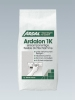
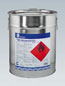
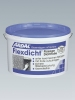
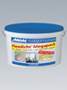
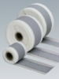
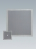
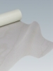
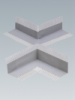

Гидроизоляционные материалы
Таблица применения:

Покрытие защитное Унипокс SB
Unipox SB-Schutzbeschichtung
2 - компонентное специальное гидроизоляционное покрытие на основе модифицированной эпоксидной смолы. Для внутреннего и наружного, а также подводного использования. Эластичное, перекрывает трещины. Водонепроницаемо, устойчиво к воздействию разбавленных щелочей и кислот. Предназначено для защиты основы под керамической плиткой. Применяется в душевых, моечных установках, бассейнах, на балконах, террасах, на предприятиях по производству напитков, в молочной, мясоперерабатывающей, химической промышленности и на фабриках - кухнях. Перед нанесением Защитного покрытия Унипокс SB поверхность следует обработать Грунтовкой Унипокс SB .
Имеются сертификаты независимых испытаний.
Согласно ZDB соответствует I, II, III и IV классу водостойкости.
Согласно AbP соответствует С - классу.
Углы между стенами, а также между стенами и полом заклеить Уплотнительной лентой ARDAL 100/120 и Внутренними и Внешними углами ARDAL . Для проходок и установочных элементов используются Уплотнительные манжеты ARDAL.
Компонент А: Giscode RE 1
Компонент B: Giscode RE 3
Расход: ок. 1,3 кг/м.кв./ слой наносится в два слоя, толщиной по 1 мм каждый слой
Хранение: в сухом и прохладном месте, боится мороза.
Упаковка: комп. А - банка 5 кг; комп. В – банка 5 кг

Шлам Ардалон 1К
Ardalon 1K
1-компонентный эластичный минеральный гидроизоляционный шлам. Для внутренних и внешних работ. Наносится щёткой или мастерком. Перекрывает трещины. Для гидроизоляции между керамической плиткой / облицовкой из природного камня и минеральным основанием полов и стен в сырых помещениях, на балконах и террасах, в плавательных бассейнах.
Согласно ZDB соответствует I , II и III классам водостойкости.
Пониженное содержание солей хромовой кислоты в соответствии со стандартом TRGS 613. Углы между стенами, а также между стенами и полом заклеить Уплотнительной лентой ARDAL и Внутренними / Внешними углами ARDAL. Для проходок и установочных элементов используются Уплотнительные манжеты ARDAL .
Giscode ZP 1
Расход: при слое 2 мм - ок. 2,5 кг/ м.кв. при слое 3 мм – ок. 3,5 кг/м.кв. (в плавательных бассейнах)
Хранение: в сухом и прохладном месте
Упаковка: мешок 25кг

Шлам Ардалон 2К Плюс
Ardalon 2K Plus
2-компонентный эластичный минеральный гидроизоляционный шлам. Не содержит растворителей. Перекрывает трещины до 2 мм. Для внутренних и внешних работ. Наносится щёткой или мастерком.
- для гидроизоляции между керамической плиткой/облицовкой из природного камня и минеральным основанием полов и стен в сырых помещениях, на балконах и террасах
- для гидроизоляции в плавательных бассейнах
- для внешней и внутренней гидроизоляции строительных конструкций от влажности грунта и воды под давлением.
Согласно ZDB соответствует I , II и III классам водостойкости.
Согласно AbP соответствует А1, А2 и В классам.
Пониженное содержание солей хромовой кислоты в соответствии со стандартом TRGS 613.
Углы между стенами, а также между стенами и полом заклеить Уплотнительной лентой ARDAL и Внутренними / Внешними углами ARDAL. Для проходок и установочных элементов используются Уплотнительные манжеты ARDAL.
Компонент А: Giscode ZP 1, Компонент B: Giscode D 1
Расход: под плитку на балконах, террасах, в сырых помещениях - ок. 3,5 кг/м.кв. (слой прим. 2мм)
под плитку в плавательных бассейнах - ок. 5 кг/м.кв. (слой прим. 3мм)
для гидроизоляции от влажности грунта - ок. 2 кг/м.кв.
для гидроизоляции от воды под давлением - ок. 4 кг/ м.кв.
Хранение: в сухом и прохладном месте, беречь от мороза.
Упаковка: сухой комп.- мешок 25 кг; жидкий компонент канистра 5 кг.
Системные решения (файл PDF)
Гидроизоляция шламом Ардалон 2К Плюс балконов и террас

Гидроизоляционная масса K100-Черная
K100 schwarz
1-компонентная битумная эмульсия без наполнителей. Готова к употреблению. Улучшена полимерами. После полного высыхания водонепроницаема, перекрывает трещины и устойчива к естественным грунтовым водам, вызывающим коррозию бетона. Устойчива к старению. Устойчива к жидкому навозу в соответствии с DIN 11622-2.
Используется для защиты от влажности грунта и воды под давлением, а также в качестве защитного покрытия бетонированных или оштукатуренных ёмкостей для хранения жидкого навоза. Разбавленная водой эмульсия используется в качестве грунтовки под одно- и двухкомпонентные битумные покрытия и Гидроизоляционные пленок SK .
Giscode ВВР 10
Расход: для защиты от влажности грунта - ок. 1,0 кг/м.кв.
для защиты от напорной воды - ок. 1,5 кг/м.кв.
в качестве грунтовки - ок. 0,1 кг/м.кв.
Хранение: в сухом и прохладном месте, беречь от мороза.
Упаковка: ведро 10 кг, 25 кг

Грунтовка SKSK Voranstrich
Низковязкая битуминозная грунтовка с большой глубиной проникновения.
Наносится на сухие минеральные поверхности с любой впитывающей способностью (низкой, средней или высокой) для улучшения сцепления с поверхностью Гидроизоляционных пленок SK и Гидроизоляционной массы SK. Для слегка влажных оснований можно использовать Гидроизоляционную массу K 100.
Giscode ВВР 10
Расход: слабо впитывающие поверхности - ок. 0,25 л/м.кв.
впитывающие/шероховатые поверхности - 0,2 - 0,6 л/м.кв.
газобетон - 0,6 - 0,9 л/м.кв.
Хранение: в сухом и прохладном месте
Упаковка: ведро 5 кг, 10 кг, 25 кг

Пленка SK3000 S
SK 3000 S Dichtungsbahn
Самоклеящаяся гидроизоляционная плёнка для круглогодичных гидроизоляционных работ. Применяется в холодном состоянии. Испытана согласно DIN 18 195. Предназначена для долговечной гидроизоляции подвалов, балконов, террас, сырых помещений, фундаментов и оснований мостов, сборных железобетонных изделий и т.п. от влажности грунта и воды без давления (в некоторых конструкциях - от воды под давлением). Водонепроницаема, включая ливневые дожди, сразу же после наклеивания. Работы можно проводить при температуре до -5 градусов Цельсия.
Каширование: Высокопрочная на разрыв, крестообразно ламинированная HDPE -пленка.
Расход: 1,05 м. кв. /м.кв.
Хранение: в вертикальном положении, при температуре от 5 до 15 градусов Цельсия.
Упаковка: рулон 20 м.кв. (ширина 1 м, толщина 1,5 мм)

ФлексдихтFlexdicht
Высокоэластичный материал - “ жидкая плёнка”- для гидроизоляции между керамическим покрытием/природным камнем и основанием. Не содержит растворителей. Для внутренних работ. Применяется в качестве бесшовной гидроизоляции на полах и стенах для защиты основания от воды и влажности. Применяется в душевых, ванных комнатах, санитарных помещениях. Не пригоден для подводного использования. Перекрывает трещины до 3,4 мм.
Имеются сертификаты независимых испытаний.
Согласно ZDB соответствует I и II классам водостойкости.
Согласно AbP соответствует классу А1.
Перед нанесением Флексдихт впитывающие поверхности следует обработать средством Грундфестигер. Герметик Флексдихт поставляется в готовом к применению виде и легко наносится при помощи валика.
Углы между стенами, а также между стенами и полом заклеить Уплотнительной лентой ARDAL и Внутренними / Внешними углами ARDAL. Для проходок и установочных элементов используются Уплотнительные манжеты ARDAL.
Giscode D 1
Расход: 1,5 - 2,0 кг/м.кв., на основаниях с повышенной пористостью расход увеличивается
Хранение: в сухом и прохладном месте, беречь от мороза.
Упаковка : ведро 8 кг, 15 кг и 25 кг.
Системные решения (файл PDF)
Система эластичной гидроизоляции - Флексдихт

Флексдихт Мегапак
Flexdicht Megapack
Набор материалов для гидроизоляции между облицовочной плиткой и основанием. Для внутренних работ. Применяется в душевых, ванных комнатах, санитарных помещениях. Не применять в подводных конструкциях. Устойчив к образованию трещин до 3,4 мм. Согласно инструкции ZDB соответствует I и II классу водостойкости.
Включает: Флексдихт - ведро 8 кг, Грундфестигер – 1кг, Уплотнительная лента Ардал 120мм – 5м, Уплотнительные манжеты Ардал 120 X 120 мм для стен – 2шт.
Хранение: в сухом и прохладном месте, беречь от мороза.
Упаковка: ведро 10 кг

Лента уплотнительная АРДАЛ 100/120
Dichtband ARDAL 100/120
Для Флексдихт, покрытия защитного Унипокс SB , шламов Ардалон 1K и Ардалон 2K плюс.
Упаковка: рулон 50 м - длина, 100 мм - ширина,
рулон 50 м - длина, 120 мм - ширина,
рулон 10 м - длина, 120 мм - ширина.
Лента АРДАЛ 100 специальная
Dichtband ARDAL 100 spezial
Длительно эластичная, самоклеящаяся, кашированная нетканым материалом уплотнительная лента на основе бутилкаучука.
Упаковка: рулон 25 м - длина, 100 мм - ширина.

Манжета уплотнительная АРДАЛ ПОЛ/СТЕНА
Dichtmanschette Wand/Boden
Для Флексдихт, покрытия защитного Унипокс SB , шламов Ардалон 1K и Ардалон 2K плюс.
Упаковка: стена - 120 х 120 мм, пол - 300 х 300 мм

Стекловолокно
Glasgittergewebe
Для Флексдихт, покрытия защитного Унипокс SB , шламов Ардалон 1K и Ардалон 2K плюс.
Упаковка: рулон, длина - 50 м, ширина 100 см

Внутренние / Внешние углы АРДАЛ
Innenecken/Aussenecken ARDAL
Для Флексдихт, покрытия защитного Унипокс SB , шламов Ардалон 1K и Ардалон 2K плюс.